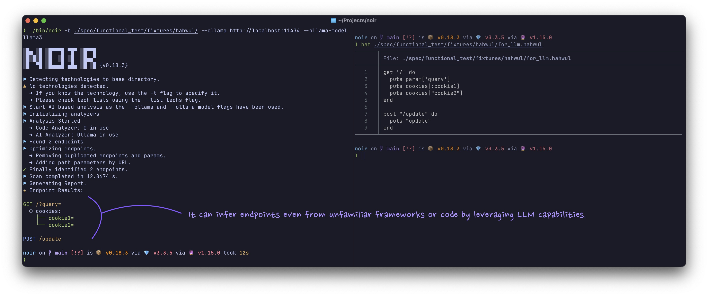

AI 기반 분석
Noir를 LLM 제공업체에 연결하여 심층 코드 분석과 엔드포인트 탐지를 수행합니다.
Noir를 대규모 언어 모델(LLM, 클라우드/로컬/ACP 에이전트)에 연결하여 심층 코드 분석을 수행합니다. 미지원 언어와 프레임워크에서도 엔드포인트를 식별할 수 있습니다.

빠른 예제
OpenAI로 스캔:
noir scan . --ai-provider openai --ai-model gpt-5.5 --ai-key $OPENAI_API_KEY
로컬 Ollama로 스캔 (API 키 불필요):
noir scan . --ai-provider ollama --ai-model gemma4
ACP 에이전트로 스캔 (모델/키 불필요):
noir scan . --ai-provider acp:codex
사용법
AI 제공업체, 모델 및 API 키를 지정합니다:
noir scan . --ai-provider <PROVIDER> --ai-model <MODEL_NAME> --ai-key <YOUR_API_KEY>
ACP 제공자(acp:*)에서는 --ai-model이 선택 사항이며 --ai-key가 보통 필요하지 않습니다:
noir scan . --ai-provider acp:codex
명령줄 플래그
| 플래그 | 설명 |
|---|---|
--ai-provider |
제공업체 접두사 (예: openai, ollama, acp:codex) 또는 사용자 정의 API URL |
--ai-model |
모델 이름 (예: gpt-5.5), acp:*에서는 선택 사항 |
--ai-key |
API 키 (NOIR_AI_KEY 환경 변수로도 설정 가능) |
--ai-agent |
에이전트 기반 AI 워크플로우 활성화 (반복적 도구 호출 루프) |
--ai-agent-max-steps |
AI 에이전트 루프 최대 단계 수 (기본값: 20) |
--ai-native-tools-allowlist |
네이티브 도구 호출 허용 제공업체 목록 (쉼표 구분, 기본값: openai,xai,github) |
--ai-max-token |
AI 요청 최대 토큰 수 (선택사항) |
--cache-disable |
LLM 응답 캐시 비활성화 |
--cache-clear |
실행 전 LLM 캐시 삭제 |
지원되는 AI 제공업체
Noir는 다음 AI 제공업체 프리셋을 지원합니다:
| 접두사 | 기본 호스트 |
|---|---|
openai |
https://api.openai.com |
xai |
https://api.x.ai |
github |
https://models.github.ai |
azure |
https://models.inference.ai.azure.com |
openrouter |
https://openrouter.ai/api/v1 |
vllm |
http://localhost:8000 |
ollama |
http://localhost:11434 |
lmstudio |
http://localhost:1234 |
acp:codex |
npx @zed-industries/codex-acp |
acp:gemini |
gemini --experimental-acp |
acp:claude |
npx @zed-industries/claude-agent-acp |
사용자 정의 제공업체는 전체 API URL을 사용합니다: --ai-provider=http://my-custom-api:9000.
원본 ACP/에이전트 stderr 로그가 필요하면 NOIR_ACP_RAW_LOG=1을 설정합니다.
작동 방식
flowchart TB
Start([AI 분석 시작]) --> InitAdapter[LLM 어댑터 초기화]
InitAdapter --> ProviderCheck{제공자 타입?}
ProviderCheck -->|OpenAI/xAI/등| GeneralAdapter[General Adapter
OpenAI 호환 API]
ProviderCheck -->|Ollama/Local| OllamaAdapter[Ollama Adapter
컨텍스트 재사용]
ProviderCheck -->|ACP 에이전트| ACPAdapter[ACP Adapter
Codex/Gemini/Claude/Custom]
GeneralAdapter --> FileSelection
OllamaAdapter --> FileSelection
ACPAdapter --> FileSelection
FileSelection[파일 선택] --> FileCount{파일 개수?}
FileCount -->|≤ 10개 파일| AnalyzeAll[모든 파일 분석]
FileCount -->|> 10개 파일| LLMFilter[LLM 기반 필터링]
LLMFilter --> CacheCheck1{캐시 있음?}
CacheCheck1 -->|예| UseCached1[캐시된 필터 사용]
CacheCheck1 -->|아니오| FilterLLM[FILTER 프롬프트로
LLM 호출]
FilterLLM --> StoreCache1[캐시에 저장]
UseCached1 --> TargetFiles
StoreCache1 --> TargetFiles
TargetFiles[선택된 대상 파일] --> BundleCheck{대량 파일 및
토큰 제한?}
AnalyzeAll --> BundleCheck
BundleCheck -->|예| BundleMode[번들 분석 모드]
BundleCheck -->|아니오| SingleMode[단일 파일 모드]
BundleMode --> CreateBundles[토큰 제한 내에서
파일 번들 생성]
CreateBundles --> ParallelBundles[번들 동시 처리]
ParallelBundles --> BundleLoop{각 번들마다}
BundleLoop --> CacheCheck2{캐시 있음?}
CacheCheck2 -->|예| UseCached2[캐시된 분석 사용]
CacheCheck2 -->|아니오| BundleLLM[BUNDLE_ANALYZE
프롬프트로 LLM 호출]
BundleLLM --> StoreCache2[캐시에 저장]
UseCached2 --> ParseEndpoints1
StoreCache2 --> ParseEndpoints1
ParseEndpoints1[응답에서
엔드포인트 파싱] --> BundleLoop
BundleLoop -->|완료| Combine
SingleMode --> FileLoop{각 파일마다}
FileLoop --> CacheCheck3{캐시 있음?}
CacheCheck3 -->|예| UseCached3[캐시된 분석 사용]
CacheCheck3 -->|아니오| AnalyzeLLM[ANALYZE 프롬프트로
LLM 호출]
AnalyzeLLM --> StoreCache3[캐시에 저장]
UseCached3 --> ParseEndpoints2
StoreCache3 --> ParseEndpoints2
ParseEndpoints2[응답에서
엔드포인트 파싱] --> FileLoop
FileLoop -->|완료| Combine
Combine[모든 엔드포인트 결합] --> LLMOptCheck{LLM 최적화
활성화?}
LLMOptCheck -->|예| FindCandidates[최적화 후보 찾기]
FindCandidates --> OptLoop{각 후보마다}
OptLoop --> OptimizeLLM[OPTIMIZE 프롬프트로
LLM 호출]
OptimizeLLM --> ApplyOpt[엔드포인트에
최적화 적용]
ApplyOpt --> OptLoop
OptLoop -->|완료| FinalResults
LLMOptCheck -->|아니오| FinalResults[최종 최적화 결과]
FinalResults --> End([종료])
style Start fill:#e1f5e1
style End fill:#e1f5e1
style LLMFilter fill:#fff4e1
style FilterLLM fill:#e1f0ff
style BundleLLM fill:#e1f0ff
style AnalyzeLLM fill:#e1f0ff
style OptimizeLLM fill:#e1f0ff
style CacheCheck1 fill:#ffe1e1
style CacheCheck2 fill:#ffe1e1
style CacheCheck3 fill:#ffe1e1
style UseCached1 fill:#e1ffe1
style UseCached2 fill:#e1ffe1
style UseCached3 fill:#e1ffe1
주요 구성 요소
LLM 어댑터 레이어
제공자 독립적 어댑터: General (OpenAI 호환 API), Ollama (서버 측 컨텍스트 재사용), ACP (acp:codex 등 에이전트 런타임).
LLM 파일 필터링
파일이 10개를 넘는 프로젝트에서는 LLM이 엔드포인트를 포함할 가능성이 높은 파일을 먼저 골라냅니다.
번들 분석
파일을 토큰 제한 내의 번들로 묶어 동시에 처리해, 대규모 코드베이스에서도 처리 속도를 유지합니다.
응답 캐싱
LLM 응답은 디스크에 캐시됩니다 (SHA256 키). 위치: ~/.local/share/noir/cache/ai/. --cache-disable 또는 --cache-clear로 제어합니다.
LLM 옵티마이저
URL과 파라미터 이름을 정규화하고 RESTful 규칙을 적용하여 엔드포인트 품질을 개선하는 선택적 후처리 단계입니다.